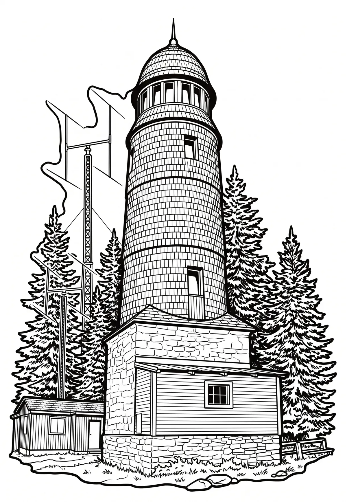

Blatenský vrch
Karlovarský kraj · 1043 m n. m.

technická památka · #006
Blatenský vrch (1043 m) je hora v Krušných horách v katastrálním území obce Potůčky zhruba 1,5 km severovýchodně od města Horní Blatná v Karlovarském kraji. Na západním úbočí vrchu se nachází přírodní památka Vlčí jámy. Západním a severním úbočím protéká Blatenský vodní příkop. Na vrcholu stojí rozhledna a televizní převaděč.